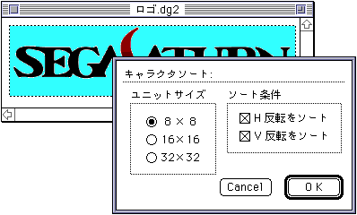
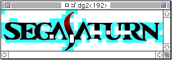
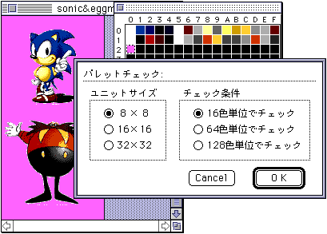
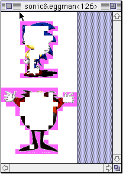

★Graphic Tools Guide
★セガペインタユーザーズマニュアル/
★Graphic Tools Guide
★セガペインタユーザーズマニュアル/
▲
戻る｜
進む▼
セガペインタユーザーズマニュアル/2.メニュー
ファイル｜
編集｜
イメージ｜
オプション｜
特別｜
ウィンドウ
■特別メニュー
-
- ●キャラクタソート
- 同一キャラクタ（一定の領域内の画像）単位で画像データをマージし、キャラクタ数を計算します。

- ユニットサイズ：ソートの単位となるキャラクタサイズを指定します。
- チェック条件：ソート条件として反転をチェックする場合に指定します。
- ソート結果は自動的に新規の書類ウインドウが作成され、以下のように表示します。

- ウインドウのタイトルバーにソートの結果として残ったキャラクタ数が表示されます。
また、画像データはマージ対象キャラクタが背景色で塗りつぶされたものが表示されます。
- ●パレットチェック
- キャラクタ内のカラーパレットが、規定色以内に収まっているかどうかをチェックします。

- ユニットサイズ：チェック単位となるキャラクタサイズを指定します。
- チェック条件：チェック対象となるパレット単位を指定します。
- チェック結果は自動的に新規の書類ウインドウが作成され、以下のように表示します。

- ウインドウのタイトルバーにチェック規定外となったキャラクタ数が表示されます。
また、画像データはチェック規定内のキャラクタが背景色で塗りつぶされたものが表示されます。
- ●オブジェクトの選択
- 指定番号のオブジェクトを選択します。
- ●オブジェクト番号の設定
- 現在選択されているオブジェクトを、指定番号に変更します。
- ●アニメーション登録
- アニメーションデータテーブルを作成します。
詳細は、ドキュメント「5.アニメーション」を参照してください。
- ●ターゲットSW
- 既に接続されているターゲットボックスとの通信を一時的に切り離したり、再接続する場合に使用します。
- ●トーンアニメーション
- カラーチェンジアニメーションを実行します。
詳細は、ドキュメント「SegaPainter アニメーション編」を参照してください。
▲
戻る｜
進む▼
★Graphic Tools Guide
★セガペインタユーザーズマニュアル/
Copyright SEGA ENTERPRISES, LTD., 1997